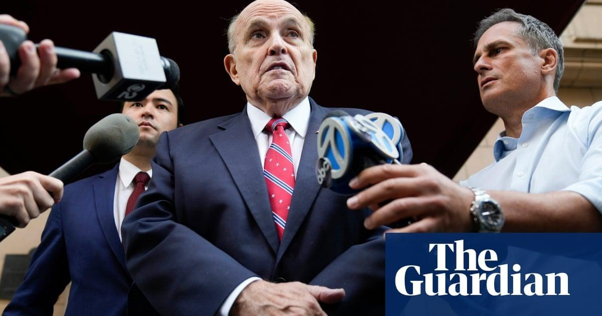

Rudy Giuliani ‘mob scene’ turned Elon Musk off seeking advice, new book saysElon Musk backed away from a plan to recruit Rudy Giuliani as a political fixer to help him turn PayPal into a bank in 2001 after he and an associate found the then New York mayor “surrounded by goonish confidantes” in an office that felt “like a mob scene”. “This guy occupies a different planet,” Musk, who would become the world’s richest man, said of Giuliani, then approaching the peak of his fame. Giuliani left office at the end of 2001 after leading New York through the 9/11 attacks, then ran for the Republican nomination for president in 2008, a campaign which soon collapsed. He became an attorney and ally to Donald Trump but missed out on a cabinet appointment when Trump won the presidency in 2016. Trump’s first impeachment was fueled by Giuliani’s work in Ukraine, seeking political dirt on opponents. Now 79, Giuliani has pleaded not guilty to 13 criminal charges of racketeering and conspiracy, regarding his work to advance Trump’s attempt to overturn the 2020 election in Georgia. The irony of the former mayor and New York US attorney being indicted on charges often used against figures in organised crime has been widely remarked. As a prosecutor, Giuliani made his name chasing down mafia kingpins. The latest picture of Giuliani as gangster is included in Elon Musk, a new biography of the 52-year-old Tesla, SpaceX and X (formerly Twitter) owner and sometime world’s richest man, by Walter Isaacson, whose other subjects include Leonardo da Vinci and Steve Jobs. Isaacson’s book was widely excerpted in the US media before publication on Tuesday. The brief meeting between Musk and Giuliani came about, Isaacson writes, as Musk sought to turn PayPal, the online payments company he co-founded, into “a social network that would disrupt the whole banking industry” – a vision he now harbours for Twitter, which he bought in October 2022 and renamed as X this year. “We have to decide whether we are going to aim big,” Musk told those who worked for him, Isaacson writes, adding that some “believed Musk’s framing was flawed”. Describing stymied attempts to rebrand PayPal, Isaacson writes: “Focus groups showed that the name X.com … conjured up visions of a seedy site you would not talk about in polite company. But Musk was unwavering and remains so to this day.” Such discussions, Isaacson reports, led Musk and an investor, Michael Moritz, to go to New York, “to see if they could recruit Rudy Giuliani, who was just ending his tenure as mayor, to be a political fixer and guide them through the policy intricacies of being a bank. “But as soon as they walked into his office, they knew it would not work. “It was like walking into a mob scene,” Moritz says. Giuliani “was surrounded by goonish confidantes. He didn’t have any idea whatsoever about Silicon Valley, but he and his henchmen were eager to line their pockets.” “They asked for 10% of the company, and that was the end of the meeting. ‘This guy occupies a different planet,’ Musk told Moritz.” Giuliani succeeded in lining his pockets after leaving city hall, making millions as a lawyer and consultant and giving paid speeches around the world. That picture has also changed. Faced with spiraling legal costs arising from his work for Trump and other cases including a $10m lawsuit from a former associate who alleges sexual assault, lawyers for Giuliani have said he is struggling to pay his bills. In New York, his luxury apartment was put up for sale. |
 |